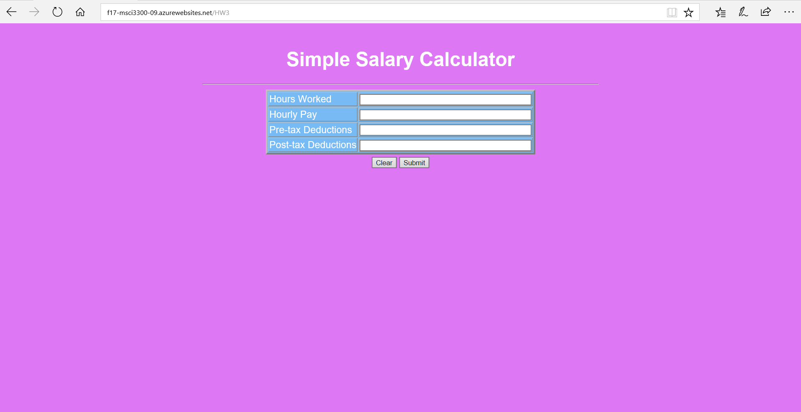
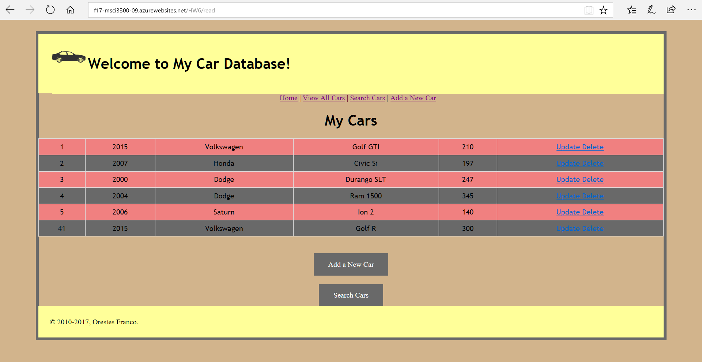

Homework 3: Salary Calculator
This site is a salary calculator that takes into consideration different tax brackets with the information given. The main takeaway from this assignment was how java coding can be combined with HTML to make a dynamic web application.
Homework 4: Database Read
This assignment required me to create a SQL database that could be called and read on a web site. This assignment introduced the concept of creating servlets that could return information about an external database.
Homework 5: Database Add & Delete

Building off of Homework 4, this one required me to include an "add" and "delete" function to the web site so that database entries could be added or deleted. Through this I learned how to manipulate java queries and servlets to complete the desired functions.
Homework 6: DB Update & Search

The final assignment added an "update" and "search" function to the web site. This assignment allowed me to refine my skills in manipulating databases using javascript. It also improved my skills in web site design with CSS.